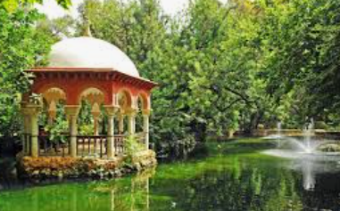

Sobre los Parques en Sevilla
Sevilla no solo es historia y monumentos. También cuenta con hermosos parques que ofrecen un respiso del bullicio de la ciudad. Son lugares perfectos para relajarse, hacer deporte o disfrutar de la naturaleza.
A continuación, te mostramos algunos de nuestros favoritos. ¡Prepara tu bicicleta o tu libro y ven a explorarlos!
-
Parque de María Luisa
Famoso por sus glorietas y la Plaza de España. Es un lugar para pasear.
Más información -
Jardines de Murillo
Justo al lado del barrio de Santa Cruz, perfectos para una parada tranquila en el centro histórico.
-
Parque de los principes
Uno de los parques más grandes de la ciudad, con un lago y zonas deportivas.